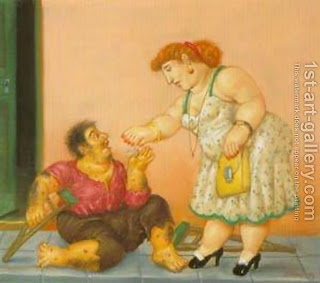

Bava Kamma 113 - Not Taking Charity from Stolen Money

A messenger of the court who delivers a court summons is believed to say that the defendant refused to come, and the court can excommunicate him based on that. But for money matters two witnesses are required.
One may not change his larger coins into smaller coins that are known to be stolen. One may not take charity from stolen money - because it encourages the thieves to steal, since they erroneously believe that giving stolen money to charity justifies their wrongdoing and exempts them from having to compensate the owner. Examples are money of unjust arbitrary customs and tax collectors, who bought rights to collect what they want.